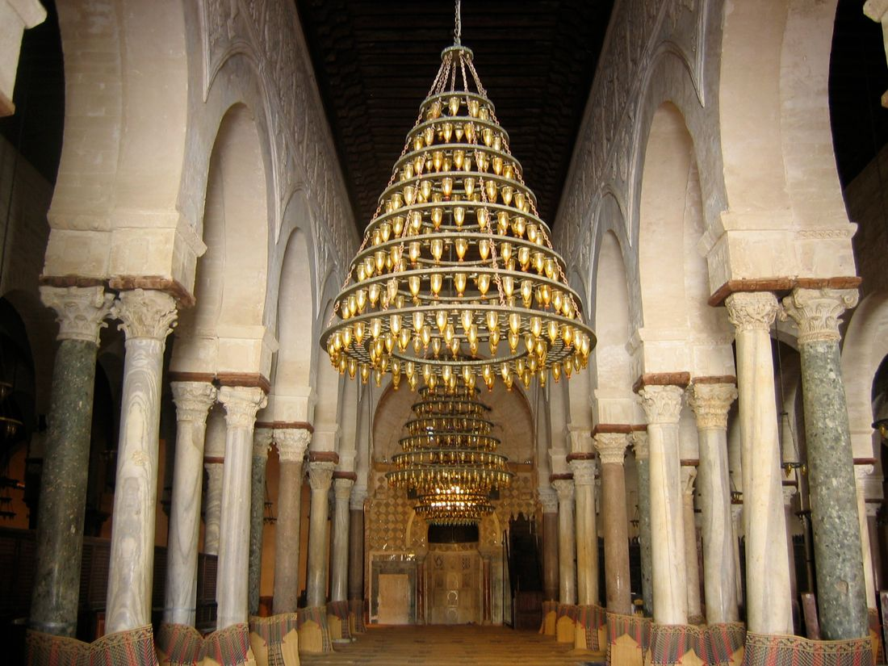

📋 Günlük Hayattaki Dinî İfadeler
İnsanlar, düşüncelerini ve duygularını dille ifade eder; dilimizde dinimizin etkisiyle ortaya çıkmış, günlük konuşmalarımıza yerleşmiş dinî ifadeleri öğreniyoruz.
Fotoğraf: Paul Livingstone (CC BY 2.0) — Wikimedia Commons
🎯 MEB Kazanımları
Kaynak: 2018 DKAB Öğretim Programı (MEB Talim ve Terbiye Kurulu) — 4.1. Günlük Hayattaki Dinî İfadeler
- 4.1.1 — Dinî ifadeleri, günlük konuşmalarda doğru ve yerinde kullanır.
- 4.1.2 — Tekbir ve salavatı söyler.
- 4.1.3 — Dilek ve dualarda kullanılan dinî ifadelere örnekler verir.
- 4.1.4 — Sübhaneke duasını okur, anlamını söyler.
🗺️ Kavram Haritası
Bu ünitenin MEB öğretim programında belirlenen anahtar kavramları, ünite temasıyla bağlantılı olarak aşağıda gösterilmiştir.
🎯 Güncel MEB Kazanımları (2024 Türkiye Yüzyılı Maarif Modeli)
Kaynak: Türkiye Yüzyılı Maarif Modeli DKAB Öğretim Programı — 1. Ünite: Günlük Hayat ve Din
- DKAB.4.1.1 — Günlük hayatta kullanılan dinî ifadeleri özetler.
- DKAB.4.1.2 — Gözlemlerinden yola çıkarak İslam dininin temizliğe verdiği önemi tahmin eder.
- DKAB.4.1.3 — Allah'a şükretmenin önemini fark eder ve bunu günlük hayatına yansıtır.
- DKAB.4.1.4 — İslam'a göre helal ve sağlıklı beslenmenin önemi hakkında bilgi toplar.
- DKAB.4.1.5 — Sübhâneke duasını okur ve anlamını yorumlar.

Günlük Konuşmalarda Dinî İfadeler
1️⃣ Günlük Konuşmalarda Dinî İfadeler
Günlük Konuşmalarda Dinî İfadeler
0/7 adım- 01
📸 Gör
 Fotoğraf: Julien Menichini — CC BY 2.0 · Wikimedia Commons
Fotoğraf: Julien Menichini — CC BY 2.0 · Wikimedia CommonsFırıncı ekmeği fırına sürerken. Bir işe başlarken söylenen söz, tam da böyle bir anda söylenir.
- 02
💡 Keşfet
Sence bu usta işe başlarken hangi sözü söylüyor olabilir? Sen bir işe başlarken ne dersin?
- 03
📖 Öğren
Günlük hayatımızda farkında olmadan pek çok dinî ifade kullanırız. Besmele (Bismillâhirrahmânirrahîm) bunların en bilinenidir; “Rahmân ve Rahîm olan Allah’ın adıyla” demektir.
Bir işe besmeleyle başlamak, o işi güzel ve dikkatli yapmaya söz vermek gibidir. Elhamdülillah şükrü, inşallah umudu, maşallah beğeniyi anlatır.
- 04
📜 Ayet / Delil
“Hamd, âlemlerin Rabbi Allah’a mahsustur.”
— Fatiha suresi, 2. ayet
Konuyla bağlantısı: Ayet, her güzelliğin sahibinin Allah olduğunu söyler. “Elhamdülillah” dediğimizde aslında bu ayetin anlamını tekrarlamış oluruz.
- 05
🌍 Günlük Hayat
Sabah kahvaltıya otururken “bismillah”, yemeği bitirince “elhamdülillah” demek; arkadaşının yeni bisikletini görünce “maşallah” demek bu ifadelerin günlük karşılığıdır.
- 06
🧠 Düşün
Besmele çekerek başladığın bir işi, çekmeden başladığın bir işten farklı yapar mısın? Neden?Bu sorunun tek bir doğru cevabı yok — kendi cümlelerinle düşün.
- 07
🎯 Mini Kontrol
“Bismillâhirrahmânirrahîm” ne anlama gelir?
Bu ifadeler, günlük hayatın hemen her anında karşımıza çıkar: bir işe başlarken, bir nimete kavuşunca, birine rastlayınca ya da bir hatamızı fark edince... Her birinin kendine göre bir kullanım yeri ve manevi anlamı vardır.
Anlamı: "Rahman ve Rahim olan Allah'ın adıyla." Yemeğe, derse, bir işe veya yolculuğa başlarken söylenir. Besmeleyle başlanan işlerin bereketli ve hayırlı olacağına inanılır. Bu yüzden peygamberimiz her güzel işe besmeleyle başlamamızı öğütlemiştir.
Anlamı: "Övgü ve şükür Allah'a mahsustur." Bir nimete, güzel bir habere ya da başarıya kavuştuğumuzda Allah'ı övmek ve O'na teşekkür etmek için söylenir. Hamd etmek, sahip olduklarımızın kıymetini bilmemizi sağlar.
Anlamı: Allah'ın bize verdiği nimetlere karşı duyulan minnettarlığı dile getirmektir. Şükür, sadece dille söylenen bir söz değil; nimeti yerinde kullanmak ve başkalarıyla paylaşmaktır da.
Anlamı: "Allah'ın selameti/esenliği senin üzerine olsun." Müslümanların karşılaştıklarında birbirlerine söylediği, sevgi ve barış dileyen bir ifadedir. Peygamberimiz selamı yaymayı, insanlar arasında sevgiyi artıran bir davranış olarak tavsiye etmiştir.
Anlamı: "Allah en büyüktür." Allah'ın büyüklüğünü, üstünlüğünü anmak için söylenir. Namazın başında ve içinde, ezanda ve bayramlarda sıkça duyduğumuz bir ifadedir.
Anlamı: Peygamberimize dua etmek, ona sevgi ve saygı sunmaktır. Peygamberimizin adı anıldığında salavat getirmek, ona olan bağlılığımızı gösterir.
Anlamı: "Allah'tan bağışlanma dilerim." Yanlışlıkla kötü bir söz söylediğimizde, bir hata yaptığımızda ya da pişmanlık duyduğumuzda Allah'tan af dilemek için söylenir. İstiğfar etmek, hatalarımızdan ders çıkarıp kendimizi düzeltmeye çalışmamız gerektiğini hatırlatır.
Anlamı: "Allah'ı bütün eksikliklerden uzak tutarım." Allah'ın hiçbir kusuru olamayacağını, O'nun yüceliğini dile getirmek için; genellikle hayranlık uyandıran güzellikler karşısında da söylenir.
🤔 Merak Ettin mi?
Neden hapşırınca "Elhamdülillah" deriz de yanımızdakiler "Yerhamükallah" der? Bu karşılıklı dua geleneği Peygamberimizin sünnetinden gelir.
🔄 Adım AdımSüreç şeması
Bir gün içinde hangi ifadeyi ne zaman söyleriz?
🏠 Günlük Hayattan
Sabah kalkınca “Elhamdülillah”, kahvaltıya başlarken “Bismillah” demek bu ifadeleri hayatın içine taşımaktır.
🤔 Sıra SendeDüşün ve cevapla
Bugün bu ifadelerden hangisini kaç kez söyledin? Birini seçip nerede söylediğini yaz.
📌 Aklında Kalsın
- Dinî ifadeler günlük konuşmanın doğal bir parçasıdır.
- Her ifadenin kendine göre bir kullanım yeri vardır.
- Önemli olan sözü söylerken anlamını da düşünmektir.

Dilek ve Dualarda Geçen Dinî İfadeler
2️⃣ Dilek ve Dualarda Geçen Dinî İfadeler
Dilek ve Dualarda Geçen Dinî İfadeler
0/7 adım- 01
📸 Gör
 Fotoğraf: Vitalii Bashkatov — CC BY-SA 4.0 · Wikimedia Commons
Fotoğraf: Vitalii Bashkatov — CC BY-SA 4.0 · Wikimedia CommonsDağların üzerinde yeni doğan bir sabah. Her yeni gün, yeni dilekler ve dualarla başlar.
- 02
💡 Keşfet
Yarın yapmak istediğin bir şeyi anlatırken hangi kelimeyi eklersin?
- 03
📖 Öğren
Geleceğe dair konuşurken inşallah (Allah dilerse) deriz. Çünkü yarının ne getireceğini yalnızca Allah bilir.
Bir güzelliği görünce maşallah, dua ederken sonunda âmin, birine teşekkür ederken Allah razı olsun deriz. Bunlar hem dua hem nezaket sözleridir.
- 04
📜 Ayet / Delil
“Eğer şükrederseniz, elbette size nimetimi artırırım.”
— İbrahim suresi, 7. ayet
Konuyla bağlantısı: Dilek ve dua sözlerimiz, sahip olduklarımızın farkında olduğumuzu gösterir. Ayet, bu farkındalığın karşılıksız kalmayacağını bildirir.
- 05
🌍 Günlük Hayat
Bir arkadaşın sana kalem verdiğinde “Allah razı olsun”, annen “Yarın pikniğe gidiyoruz” dediğinde “inşallah” demen bu ifadelerin günlük hayattaki yeridir.
- 06
🧠 Düşün
“İnşallah” demek, bir işi yapmaktan vazgeçmek anlamına gelir mi? Sence neden?Bu sorunun tek bir doğru cevabı yok — kendi cümlelerinle düşün.
- 07
🎯 Mini Kontrol
“İnşallah” sözü hangi durumda kullanılır?
Dua, kulun Allah'a yönelerek O'ndan bir şey istemesi, O'na yalvarması ve gönlünü açmasıdır. Sevdiklerimize iyi dileklerde bulunurken de aslında onlar için Allah'tan bir şeyler dileriz. İşte bu yüzden günlük hayatımızda birçok "dilek ifadesi" kullanırız:
- Allah şifa versin — Hasta olan birine, acil bir iyileşme dileğiyle söylenir.
- Allah'a emanet ol — Yolculuğa çıkan birinin yolunun ve kendisinin Allah'ın korumasında olmasını dilemek için söylenir.
- İnşallah — "Allah izin verirse/dilerse" anlamına gelir; gelecekte olmasını umduğumuz bir işten bahsederken söylenir. Bu söz, her şeyin Allah'ın izniyle gerçekleştiğini hatırlamamızı sağlar.
- Allah razı olsun — Bize iyilik yapan, yardım eden birine teşekkür etmek için söylenir.
- Amin — "Öyle olsun, kabul et Allah'ım" anlamındadır. Bir dua bittiğinde, o duanın kabul olması dileğiyle hep birlikte söylenir.
- Allah bereket versin — Birinin kazancına, emeğine veya evine bolluk dilemek için söylenir.
- Hayırlı olsun — Yeni bir eve taşınan, yeni bir işe başlayan ya da yeni bir eşyaya kavuşan birine söylenir.
- Allah kolaylık versin — Zor bir işe girişen birine güç ve kolaylık dilemek için söylenir.
- Allah rahmet eylesin — Vefat etmiş bir kimse anıldığında, onun için Allah'tan merhamet dilenerek söylenir.
❌ Yanlış Bilinenler
❌ Bazıları "İnşallah" demeyi "belki olur belki olmaz" gibi bir belirsizlik ifadesi sanır.
✅ Aslında "İnşallah", her şeyin Allah'ın izniyle gerçekleştiğine olan inancımızı, kesin bir tevekkül bilinciyle ifade eder.
🗺️ Kavram HaritasıKavram ilişkisi
Bu konunun alt başlıkları ve aralarındaki ilişki
🏠 Günlük Hayattan
Birine “Geçmiş olsun” ya da “Allah razı olsun” demek de aslında onun için dua etmektir.
🤔 Sıra SendeDüşün ve cevapla
Sevdiğin biri için bugün hangi güzel dileği söyleyebilirsin?
📌 Aklında Kalsın
- Dua, kulun Allah’a yönelip O’ndan istemesidir.
- İyi dileklerimiz çoğu zaman kısa birer duadır.
- “Âmin” demek, duaya katılmak demektir.

Bir Dua Tanıyorum: Sübhâneke Duası ve Anlamı
3️⃣ Bir Dua Tanıyorum: Sübhâneke Duası ve Anlamı
Bir Dua Tanıyorum: Sübhâneke Duası ve Anlamı
0/7 adım- 01
📸 Gör
 Fotoğraf: Yahia.Mokhtar — CC BY-SA 4.0 · Wikimedia Commons
Fotoğraf: Yahia.Mokhtar — CC BY-SA 4.0 · Wikimedia CommonsBursa Yeşil Türbe’nin duvarı. Dualar yüzyıllardır hem okunmuş hem de yazıyla yaşatılmıştır.
- 02
💡 Keşfet
Bir duayı ezberlemek yeterli midir, yoksa anlamını bilmek de gerekir mi?
- 03
📖 Öğren
Sübhâneke, namaza başlarken okunan kısa bir duadır. Anlamı şudur: “Allah’ım! Sen her türlü eksiklikten uzaksın. Seni överim. Senin adın mübarektir. Şanın yücedir. Senden başka ilah yoktur.”
Bu dua, namaza başlarken zihnimizi toplamamızı ve kime yöneldiğimizi hatırlamamızı sağlar.
- 04
📜 Ayet / Delil
“Allah’ım! Sen eksik sıfatlardan uzaksın, seni daima böyle tenzih eder ve överim. Senin adın mübarektir. Varlığın, şanın her şeyden üstündür. Senden başka ilah yoktur.”
— Sübhâneke duasının anlamı (namaza başlangıç duası)
Konuyla bağlantısı: Duanın kendi metni, konunun delilidir: namaza Allah’ı överek ve O’ndan başka ilah olmadığını hatırlayarak başlarız.
- 05
🌍 Günlük Hayat
Namaza duracağın zaman, aklındaki oyun ya da telaş dağılsın diye önce Sübhâneke okunur. Bir sınava başlamadan önce derin bir nefes almaya benzer.
- 06
🧠 Düşün
Bir duayı anlamını bilerek okumak, sence okuyanı nasıl etkiler?Bu sorunun tek bir doğru cevabı yok — kendi cümlelerinle düşün.
- 07
🎯 Mini Kontrol
Sübhâneke duası ne zaman okunur?
Sübhânekellâhümme ve bi hamdik ve tebârekesmük ve teâlâ ceddük ve lâ ilâhe ğayrük.
Kelime kelime anlamı:
- Sübhânekellâhümme ve bi hamdik — "Allah'ım! Sen eksik sıfatlardan uzaksın, seni daima böyle tenzih eder ve överim."
- ve tebârekesmük — "Senin adın mübarektir."
- ve teâlâ ceddük — "Varlığın, şanın her şeyden üstündür."
- ve lâ ilâhe ğayrük — "Senden başka ilah yoktur."
Ne zaman okunur? Sübhâneke duası, namaza durup iftitah (başlangıç) tekbiri aldıktan hemen sonra, Kur'an okumaya başlamadan önce okunur. Bu yüzden bu duaya "namazın anahtarı" da denilebilir.
Neden önemlidir? Sübhâneke duasıyla namaza, Allah'ı övüp yücelterek ve O'ndan başka ilah olmadığını hatırlayarak başlarız. Bu dua, kalbimizi ibadete hazırlar ve Allah'a olan bağlılığımızı tazeler.
🌍 Gerçek Hayattan Bir Örnek
Bir arkadaşın sınavdan yüksek not aldığında "Elhamdülillah, çok sevindim!" demesi, hem başarısının kıymetini bilmesini hem de bunu Allah'a şükrederek kutlamasını gösterir.
💭 Düşün ve Cevapla
Sence günlük hayatta en sık hangi dinî ifadeyi kullanıyoruz? Neden bu ifadeyi bu kadar sık kullanırız?
🔄 Adım AdımSüreç şeması
Sübhâneke duasının bölümleri
📌 Aklında Kalsın
- Sübhâneke, namaza başlarken okunan bir duadır.
- Duada Allah yüceltilir ve yalnız O’na kulluk edildiği söylenir.

Şükrü Hayatımıza Yansıtmak
4️⃣ Şükrü Hayatımıza Yansıtmak
Şükrü Hayatımıza Yansıtmak
0/7 adım- 01
📸 Gör
 Fotoğraf: Acabashi — CC BY-SA 4.0 · Wikimedia Commons
Fotoğraf: Acabashi — CC BY-SA 4.0 · Wikimedia CommonsPazarda tezgâhlar dolusu meyve ve sebze. Sofraya gelen her şeyin arkasında bir emek ve bir nimet vardır.
- 02
💡 Keşfet
Bu tezgâhtaki bir domatesin sofrana gelene kadar kaç kişinin emeği geçmiştir?
- 03
📖 Öğren
Şükür, sahip olduklarımızın farkında olmak ve bunun için Allah’a teşekkür etmektir. Yalnızca “elhamdülillah” demek değildir.
Şükrü hayatımıza yansıtmak; nimeti israf etmemek, paylaşmak ve emeği geçenlere teşekkür etmek demektir.
- 04
📜 Ayet / Delil
“Eğer şükrederseniz, elbette size nimetimi artırırım.”
— İbrahim suresi, 7. ayet
Konuyla bağlantısı: Ayet şükrün karşılıksız kalmadığını bildirir. Şükreden kişi elindekinin kıymetini bilir, kıymetini bilen de onu korur.
- 05
🌍 Günlük Hayat
Tabağına aldığın kadarını yemek, ekmeği çöpe atmamak, suyu boşa akıtmamak — bunların hepsi şükrün günlük hayattaki hâlidir.
- 06
🧠 Düşün
Sence şükretmek sadece söz müdür, yoksa davranış mıdır? Kendinden bir örnek düşün.Bu sorunun tek bir doğru cevabı yok — kendi cümlelerinle düşün.
- 07
🎯 Mini Kontrol
Aşağıdakilerden hangisi şükrün davranışa dönüşmüş hâlidir?
"Elhamdülillah" demek güzel bir alışkanlıktır ama önemli olan, bu sözün arkasındaki şükür duygusunu davranışlarımızda da göstermektir. Şükretmek; sağlığımızın, ailemizin, evimizin ve önümüzdeki yemeğin kıymetini bilmek, bunları boşa harcamamak ve elimizdekini ihtiyacı olanlarla paylaşmaktır.
Gerçek şükür yalnızca dille söylenen bir kelime değildir. Sahip olduğumuz nimetleri iyi kullanmak, onlara özen göstermek ve başkalarına yardımcı olmak, şükrü hayatımıza yansıtmanın en güzel yollarındandır.
- Sofradaki yemeği israf etmeden, ihtiyacımız kadar yemek
- Sağlığımızın kıymetini bilip ona özen göstermek
- Sahip olduklarımızı ihtiyacı olanlarla paylaşmak
- Bize iyilik eden herkese teşekkür etmek
🌍 Gerçek Hayattan Bir Örnek
Tabağına ihtiyacı kadar yemek alıp tabağını bitiren bir öğrenci, hem nimete şükretmiş hem de dinimizin öğütlediği tutumlu olma alışkanlığını hayatına geçirmiş olur.
🔄 Adım AdımSüreç şeması
Şükür nasıl davranışa dönüşür?
🏠 Günlük Hayattan
Tabağındaki yemeği bitirmek ve ekmeği israf etmemek, şükrün davranışa dönüşmüş hâlidir.
🤔 Sıra SendeDüşün ve cevapla
Bugün fark ettiğin bir nimeti yaz ve onun için nasıl şükredebileceğini söyle.
📌 Aklında Kalsın
- Şükür yalnız dille değil davranışla da yapılır.
- Nimeti korumak ve paylaşmak şükrün göstergesidir.

Dinimizde Temizliğin Önemi
5️⃣ Dinimizde Temizliğin Önemi
Dinimizde Temizliğin Önemi
0/7 adım- 01
📸 Gör
 Fotoğraf: Wabyona Bingi — CC BY-SA 4.0 · Wikimedia Commons
Fotoğraf: Wabyona Bingi — CC BY-SA 4.0 · Wikimedia CommonsMusluğun altında sabunla yıkanan eller. Günde onlarca kez tekrarladığımız en basit temizlik.
- 02
💡 Keşfet
Elini en son ne zaman yıkadın? Bunu neden yaptığını hiç düşündün mü?
- 03
📖 Öğren
Dinimiz temizliğe büyük önem verir. Temizlik ikiye ayrılır: maddi temizlik (beden, elbise, çevre) ve manevi temizlik (kalbin kırıcı düşüncelerden arınması).
İbadetlere temizlikle hazırlanırız. Abdest almak, namaza temiz bir bedenle durmak bunun örneğidir.
- 04
📜 Ayet / Delil
“Allah tertemiz olanları sever.”
— Tevbe suresi, 108. ayet
Konuyla bağlantısı: Ayet temizliği bir sevgi sebebi olarak anlatır. Temizlik yalnızca sağlık kuralı değil, aynı zamanda bir ibadet hazırlığıdır.
- 05
🌍 Günlük Hayat
Yemekten önce elini yıkamak, dişini fırçalamak, sırana çöp bırakmamak — bunlar hem sağlığını hem de dinî bir güzelliği yaşatır.
- 06
🧠 Düşün
Bedeni temiz olan bir insanın kalbi de temiz olmalı mıdır? Sence ikisi arasında bir bağ var mı?Bu sorunun tek bir doğru cevabı yok — kendi cümlelerinle düşün.
- 07
🎯 Mini Kontrol
Manevi temizlik ne demektir?
Çevremizi gözlemlediğimizde dinimizin temizliğe çok büyük bir önem verdiğini görürüz: Namaza durmadan önce alınan abdest, camilerin özenle temiz tutulması, yemekten önce ellerin yıkanması gibi pek çok alışkanlığımız aslında bu önemden kaynaklanır.
Peygamberimiz, temizliğin inancımızın önemli bir parçası olduğunu belirtmiş ve Müslümanları hem bedence hem de çevrece temiz olmaya özendirmiştir. Temizlik yalnızca bedenimizi değil; kıyafetlerimizi, evimizi, okulumuzu ve birlikte kullandığımız yerleri de kapsar.
Bedenimizin temizliği kadar kalbimizin temizliği de önemlidir: doğru sözlü olmak, kimseye kötülük düşünmemek ve güzel duygular taşımak da bir çeşit manevi temizliktir.
🤔 Merak Ettin mi?
Camiye girmeden önce ayakkabılarımızı çıkarmamız ve abdest almamız, ibadete hem bedenen hem de niyetimizle temiz bir şekilde başlamamız gerektiğini hatırlatır.
🏠 Günlük Hayattan
Yemekten önce elleri yıkamak hem sağlık hem de dinimizin önerdiği bir temizliktir.
🤔 Sıra SendeDüşün ve cevapla
Okulda temizlik için yapabileceğin üç şey say.
📌 Aklında Kalsın
- Dinimiz beden, elbise ve çevre temizliğine önem verir.
- Temizlik hem ibadetin hem sağlığın şartıdır.

Helal ve Sağlıklı Beslenme
6️⃣ Helal ve Sağlıklı Beslenme
Helal ve Sağlıklı Beslenme
0/7 adım- 01
📸 Gör
 Fotoğraf: John Hoey — CC BY 2.0 · Wikimedia Commons
Fotoğraf: John Hoey — CC BY 2.0 · Wikimedia CommonsPazarda taze meyve ve sebze tezgâhları. Sağlıklı beslenme, önce doğru seçimle başlar.
- 02
💡 Keşfet
Bugün yediklerini düşün. Hangileri bedenine iyi geldi, hangileri değil?
- 03
📖 Öğren
Helal, dinimizce yenmesine ve içilmesine izin verilen şeydir. Haram ise yasaklanandır.
Dinimiz hem helal olmasını hem de temiz ve sağlıklı olmasını ister. Bedenimiz bize emanettir; onu korumak da bir sorumluluktur.
- 04
📜 Ayet / Delil
“Allah tertemiz olanları sever.”
— Tevbe suresi, 108. ayet
Konuyla bağlantısı: Temizlik yalnızca dışımızla değil, bedenimize aldığımız şeylerle de ilgilidir. Temiz ve helal gıda, bedene gösterilen saygıdır.
- 05
🌍 Günlük Hayat
Kantinden bir şey alırken içindekiler kısmına bakmak, bol sebze-meyve yemek, aşırıya kaçmamak helal ve sağlıklı beslenmenin günlük hâlidir.
- 06
🧠 Düşün
Bedeninin sana emanet olduğunu düşünürsen, beslenme alışkanlığında neyi değiştirirdin?Bu sorunun tek bir doğru cevabı yok — kendi cümlelerinle düşün.
- 07
🎯 Mini Kontrol
“Helal” kelimesi ne anlama gelir?
Dinimiz, yediğimiz ve içtiğimiz şeylerin hem helal hem de sağlığımıza uygun olmasına önem verir. Helal olan bir yiyecek aynı zamanda temiz ve zararsız olmalıdır; bu yüzden dinimiz beslenirken hem "ne yediğimize" hem de "nasıl yediğimize" dikkat etmemizi öğütler.
Kur'an-ı Kerim'de yiyip içerken ölçülü davranmamız ve israftan kaçınmamız öğütlenir. Aşırı yemek yemek de yemeği ziyan etmek de dinimizin hoş görmediği davranışlardandır.
- Yemeklerimize besmele ile başlayıp ihtiyacımız kadar yemek
- Temiz ve sağlıklı gıdaları tercih etmek
- Yemeği israf etmemek, artanı değerlendirmek
- Yemekten sonra Allah'a hamd etmek
❌ Yanlış Bilinenler
❌ Bazıları helal olmanın, bir yiyeceğin sağlıklı olup olmamasıyla ilgisi olmayan sadece dinî bir kural olduğunu sanır.
✅ Aslında dinimiz, yiyeceğin helal olmasının yanında temiz, zararsız ve ölçülü tüketilmesini de ister; böylece hem inancımıza hem sağlığımıza uygun davranmış oluruz.
⚖️ KarşılaştırmaKarşılaştırma görseli
Sofrada neye dikkat ederiz?
Yapılması güzel
Kaçınılması gereken
🏠 Günlük Hayattan
Beslenirken hem helâl hem de sağlıklı olanı seçmek, bedenimize karşı sorumluluğumuzdur.
🤔 Sıra SendeDüşün ve cevapla
Bugün yediklerinden hangisi sağlıklıydı? Bir tanesini nedeniyle yaz.
📌 Aklında Kalsın
- Helâl, dinimizce yenmesine izin verilen demektir.
- Sağlıklı beslenmek bedenimizin bizde bir emanet olduğunu bilmektir.
✅ Öğrendiklerimizi Değerlendiriyoruz
Ünitenin sonunda şu kazanımlar değerlendirilir:
- Günlük konuşmalarda geçen dinî ifadeleri doğru durumda kullanabilme.
- Dilek ve dualarda geçen ifadelerin anlamlarını bilme ve yerinde kullanabilme.
- Sübhâneke duasını doğru okuyup anlamını açıklayabilme.
- Şükür duygusunu davranışlara yansıtabilme.
- Dinimizin temizliğe verdiği önemi günlük hayattan örneklerle açıklayabilme.
- Helal ve sağlıklı beslenmenin önemi hakkında bilgi toplayabilme.
Bu kazanımlar, sayfadaki "✅ Değerlendirme" ve "📝 Araştırma Oyunları" bölümlerindeki zamanlı testlerle (can hakkı ve puanlama ile) ölçülür.
👨👩👧 Ailemle Yapıyorum
Bu hafta ailenle birlikte, evde en sık kullandığınız 5 dinî ifadeyi ve anlamlarını bir kağıda yazıp mutfağa asın.
📖 Genişletilmiş Kavramlar Sözlüğü
Dinî ifadeleri daha iyi anlayabilmek için bilmemiz gereken temel kavramlar, konularına göre gruplandırılmıştır:
Allah ve Peygamberimizle İlgili Kavramlar
- Allah — Evrenin ve bizim tek yaratıcımız; eşi, benzeri ve ortağı yoktur.
- Peygamber — Allah'ın, insanlara doğru yolu göstermek için gönderdiği elçi.
- Vahiy — Allah'ın, peygamberlerine gönderdiği bilgi ve mesaj.
- Melek — Allah'ın nurdan yarattığı, hiç günah işlemeyen, sürekli O'na itaat eden varlık.
Allah'ın Bize Verdikleri
- Nimet — Allah'ın kullarına verdiği güzellik ve iyilik (sağlık, aile, yiyecek gibi).
- Rahmet — Allah'ın kullarına olan sonsuz merhameti ve acıması.
- Lütuf — Allah'ın, hak etmediğimiz hâlde bize bahşettiği iyilik ve ihsan.
Davranışlarımızın Karşılığı
- Sevap — İyi bir davranışın Allah katındaki karşılığı, mükâfatı.
- Günah — Allah'ın hoş görmediği, yasakladığı kötü davranış.
- Helal — Dinimizin yapılmasına izin verdiği şey.
- Haram — Dinimizin kesin olarak yasakladığı şey.
Ahiretle İlgili Kavramlar
- Cennet — İyi, güzel işler yapan insanların öldükten sonra gideceği, hiç eksiği olmayan güzel yer.
- Cehennem — Kötülük yapıp tövbe etmeyenlerin gideceği söylenen, azap dolu yer.
İbadetlerle İlgili Kavramlar
- İbadet — Allah'a olan sevgi, saygı ve bağlılığımızı göstermek için yaptığımız davranışların tümü.
- Namaz — Müslümanların günde beş vakit kıldığı, bedenle yapılan en önemli ibadet.
- Ezan — Namaz vaktinin geldiğini bildiren, minarelerden okunan çağrı.
- Oruç — İmsak vaktinden akşam ezanına kadar yeme, içme ve nefsin isteklerinden uzak durma ibadeti.
- Zekat — Belli bir zenginliğe ulaşan Müslümanların, mallarının bir kısmını ihtiyaç sahiplerine vermesi.
- Kurban — Allah'ın rızasını kazanmak amacıyla belirli şartlarda kesilen hayvan.
- Hac — Gücü yeten Müslümanların, ömürlerinde bir kez Mekke'ye yaptığı ibadet yolculuğu.
Mübarek Zaman ve Günler
- Ramazan — Oruç tutulan, Kur'an'ın indirilmeye başladığı mübarek ay.
- Bayram — Dinimizde sevinç ve kardeşlik duygularıyla kutlanan özel günler (Ramazan ve Kurban Bayramı gibi).
Temizlik ve Sağlıklı Yaşamla İlgili Kavramlar
- Abdest — Namaza başlamadan önce el, ağız, burun, yüz, kollar ve ayakların belirli bir şekilde yıkanmasıyla yapılan bedensel temizlik.
- Temizlik — Bedenimizin, kıyafetlerimizin ve çevremizin her zaman düzenli ve temiz tutulması; dinimizin önemle üzerinde durduğu bir değer.
- İsraf — Sahip olduğumuz nimetleri gereğinden fazla veya boşuna kullanıp ziyan etmek; dinimizin hoş görmediği bir davranış.
✅ Kendimi Değerlendiriyorum
🌍 Hayatta Dene
Bugünün görevi: Bugün en az 3 kez günlük dinî ifadeleri (Bismillah, İnşallah, Elhamdülillah gibi) doğru yerinde ve anlamını düşünerek kullan.
Günlük Konuşmalarda Dinî İfadeler
🎯 İfadeleri Doğru Kutuya Sürükle
İfadeleri parmağınla/farenle sürükleyip ait olduğu kategori kutusuna bırak!
Dilek ve Dualarda Geçen Dinî İfadeler
🌳 Dua Ağacım
Kendi dua ya da dileğini yaz, ağaca bir yaprak/çiçek olarak ekle. Ağaçtaki yapraklara tıklayınca duayı okuyabilirsin.
Bir yaprağa tıklayınca duası burada görünecek 👆
🌿 Ağaçtaki dua sayısı: 0
Bir Dua Tanıyorum: Sübhâneke Duası ve Anlamı
Sübhânekellâhümme ve bi hamdik ve tebârekesmük ve teâlâ ceddük ve lâ ilâhe ğayrük.
Dua Bölümü
Anlamı
🧩 Kelime Sırala: Duayı Doğru Sırada Diz
Kelimeleri doğru sırada tıklayarak duayı baştan sona diz. Yanlış tıklarsan taş titrer, tekrar dene!
📖 Adım 1: Kelimeleri Aç
Aşağıdaki düğmeye her bastığında bir kelime daha görünür. Duayı ezberden tamamlamaya çalış!
💡 Bilgi: Sübhâneke duası, namaza başlarken (iftitah tekbirinden hemen sonra) okunur.
🌫️ Adım 2: Kaybolan Kelimeler
Şimdi tam tersi! Dua tamamen görünüyor. Düğmeye bastıkça rastgele bir kelime kaybolacak — kaybolan kelimeleri ezbercen söylemeye çalış. Hepsi kaybolunca duayı tamamen ezbere biliyorsun demektir!
Gizlenen: 0/13
⌨️ Adım 3: Duayı Yazarak Sınav Ol
Sübhâneke duasını hatırladığın gibi (kelimeleri boşlukla ayırarak) aşağıya yaz, sonra kontrol et. Doğru kelimeler yeşil, yanlışlar kırmızı, eksikler gri görünecek.
🔁 Bonus: Tekrar Sayacı
Duayı sesli olarak oku, sonra düğmeye bas. Ne kadar çok tekrar edersen o kadar iyi ezberlersin!
Tekrar sayısı: 0
🖥️ Ünite Sunumu
4. SINIF — 1. ÜNİTE
Günlük Hayattaki Dinî İfadeler
Din Kültürü ve Ahlak Bilgisi
Ayşe Yazıcı
🎯 Bu Ünitede Neler Öğreneceğiz?
- Günlük Konuşmalarda Dinî İfadeler
- Dilek ve Dualarda Geçen Dinî İfadeler
- Bir Dua Tanıyorum: Sübhâneke Duası ve Anlamı
- Öğrendiklerimizi Değerlendiriyoruz
- Genişletilmiş Kavramlar Sözlüğü
📌 Günlük Konuşmalarda Dinî İfadeler (1/9)
- Bu ifadeler, günlük hayatın hemen her anında karşımıza çıkar: bir işe başlarken, bir nimete kavuşunca, birine rastlayınca ya da bir hatamızı fark edince... Her birinin kendine göre bir kullanım yeri ve manevi anlamı vardır.
📌 Günlük Konuşmalarda Dinî İfadeler (2/9)
- 📿 Besmele — "Bismillâhirrahmânirrahîm"
Anlamı: "Rahman ve Rahim olan Allah'ın adıyla." Yemeğe, derse, bir işe veya yolculuğa başlarken söylenir. Besmeleyle başlanan işlerin bereketli ve hayırlı olacağına inanılır. Bu yüzden peygamberimiz her güzel işe besmeleyle başlamamızı öğütlemiştir.
📌 Günlük Konuşmalarda Dinî İfadeler (3/9)
- 🙏 Hamd — "Elhamdülillah"
Anlamı: "Övgü ve şükür Allah'a mahsustur." Bir nimete, güzel bir habere ya da başarıya kavuştuğumuzda Allah'ı övmek ve O'na teşekkür etmek için söylenir. Hamd etmek, sahip olduklarımızın kıymetini bilmemizi sağlar.
📌 Günlük Konuşmalarda Dinî İfadeler (4/9)
- 💚 Şükür — "Allah'a şükür"
Anlamı: Allah'ın bize verdiği nimetlere karşı duyulan minnettarlığı dile getirmektir. Şükür, sadece dille söylenen bir söz değil; nimeti yerinde kullanmak ve başkalarıyla paylaşmaktır da.
📌 Günlük Konuşmalarda Dinî İfadeler (5/9)
- 🤝 Selam — "Selamünaleyküm" / "Ve aleykümselam"
Anlamı: "Allah'ın selameti/esenliği senin üzerine olsun." Müslümanların karşılaştıklarında birbirlerine söylediği, sevgi ve barış dileyen bir ifadedir. Peygamberimiz selamı yaymayı, insanlar arasında sevgiyi artıran bir davranış olarak tavsiye etmiştir.
📌 Günlük Konuşmalarda Dinî İfadeler (6/9)
- 🕌 Tekbir — "Allahu Ekber"
Anlamı: "Allah en büyüktür." Allah'ın büyüklüğünü, üstünlüğünü anmak için söylenir. Namazın başında ve içinde, ezanda ve bayramlarda sıkça duyduğumuz bir ifadedir. - 🌙 Salavat — "Allahümme salli alâ seyyidina Muhammed"
Anlamı: Peygamberimize dua etmek, ona sevgi ve saygı sunmaktır. Peygamberimizin adı anıldığında salavat getirmek, ona olan bağlılığımızı gösterir.
📌 Günlük Konuşmalarda Dinî İfadeler (7/9)
- 😔 İstiğfar — "Estağfirullah"
Anlamı: "Allah'tan bağışlanma dilerim." Yanlışlıkla kötü bir söz söylediğimizde, bir hata yaptığımızda ya da pişmanlık duyduğumuzda Allah'tan af dilemek için söylenir. İstiğfar etmek, hatalarımızdan ders çıkarıp kendimizi düzeltmeye çalışmamız gerektiğini hatırlatır.
📌 Günlük Konuşmalarda Dinî İfadeler (8/9)
- ✨ Tesbih — "Sübhanallah"
Anlamı: "Allah'ı bütün eksikliklerden uzak tutarım." Allah'ın hiçbir kusuru olamayacağını, O'nun yüceliğini dile getirmek için; genellikle hayranlık uyandıran güzellikler karşısında da söylenir.
📌 Günlük Konuşmalarda Dinî İfadeler (9/9)
- Biliyor muydunuz? Kur'an okumaya başlarken "Eûzü billâhi mine'ş-şeytâni'r-racîm" (Kovulmuş şeytanın şerrinden Allah'a sığınırım) denir. Biri hapşırıp "Elhamdülillah" dediğinde ise ona "Yerhamükallah" (Allah sana merhamet etsin) diye karşılık verilir; o kişi de buna "Yehdinallah" diyerek cevap verir.
🤔 Merak Ettin mi?
Neden hapşırınca "Elhamdülillah" deriz de yanımızdakiler "Yerhamükallah" der? Bu karşılıklı dua geleneği Peygamberimizin sünnetinden gelir.
📌 Dilek ve Dualarda Geçen Dinî İfadeler (1/3)
- Dua, kulun Allah'a yönelerek O'ndan bir şey istemesi, O'na yalvarması ve gönlünü açmasıdır. Sevdiklerimize iyi dileklerde bulunurken de aslında onlar için Allah'tan bir şeyler dileriz. İşte bu yüzden günlük hayatımızda birçok "dilek ifadesi" kullanırız:
📌 Dilek ve Dualarda Geçen Dinî İfadeler (2/3)
- Allah şifa versin — Hasta olan birine, acil bir iyileşme dileğiyle söylenir.
- Allah'a emanet ol — Yolculuğa çıkan birinin yolunun ve kendisinin Allah'ın korumasında olmasını dilemek için söylenir.
- İnşallah — "Allah izin verirse/dilerse" anlamına gelir; gelecekte olmasını umduğumuz bir işten bahsederken söylenir. Bu söz, her şeyin Allah'ın izniyle gerçekleştiğini hatırlamamızı sağlar.
- Allah razı olsun — Bize iyilik yapan, yardım eden birine teşekkür etmek için söylenir.
- Amin — "Öyle olsun, kabul et Allah'ım" anlamındadır. Bir dua bittiğinde, o duanın kabul olması dileğiyle hep birlikte söylenir.
- Allah bereket versin — Birinin kazancına, emeğine veya evine bolluk dilemek için söylenir.
- Hayırlı olsun — Yeni bir eve taşınan, yeni bir işe başlayan ya da yeni bir eşyaya kavuşan birine söylenir.
- Allah kolaylık versin — Zor bir işe girişen birine güç ve kolaylık dilemek için söylenir.
- Allah rahmet eylesin — Vefat etmiş bir kimse anıldığında, onun için Allah'tan merhamet dilenerek söylenir.
📌 Dilek ve Dualarda Geçen Dinî İfadeler (3/3)
- Unutmayalım: Bu ifadeleri kullanırken sadece bir söz söylemiş olmuyoruz; aynı zamanda karşımızdaki kişi için içtenlikle dua etmiş oluyoruz. Bu yüzden bu sözleri gönülden söylemeliyiz.
❌ Yanlış Bilinenler
❌ Bazıları "İnşallah" demeyi "belki olur belki olmaz" gibi bir belirsizlik ifadesi sanır.
✅ Aslında "İnşallah", her şeyin Allah'ın izniyle gerçekleştiğine olan inancımızı, kesin bir tevekkül bilinciyle ifade eder.
📌 Bir Dua Tanıyorum: Sübhâneke Duası ve Anlamı (1/3)
- 🕋 سُبْحَانَكَ اَللّٰهُمَّ وَبِحَمْدِكَ وَتَبَارَكَ اسْمُكَ وَتَعَالٰى جَدُّكَ وَلاَ اِلٰهَ غَيْرُكَ — Sübhânekellâhümme ve bi hamdik ve tebârekesmük ve teâlâ ceddük ve lâ ilâhe ğayrük.
📌 Bir Dua Tanıyorum: Sübhâneke Duası ve Anlamı: Kelime kelime anlamı
- Sübhânekellâhümme ve bi hamdik — "Allah'ım! Sen eksik sıfatlardan uzaksın, seni daima böyle tenzih eder ve överim."
- ve tebârekesmük — "Senin adın mübarektir."
- ve teâlâ ceddük — "Varlığın, şanın her şeyden üstündür."
- ve lâ ilâhe ğayrük — "Senden başka ilah yoktur."
📌 Bir Dua Tanıyorum: Sübhâneke Duası ve Anlamı (3/3)
- Ne zaman okunur? Sübhâneke duası, namaza durup iftitah (başlangıç) tekbiri aldıktan hemen sonra, Kur'an okumaya başlamadan önce okunur. Bu yüzden bu duaya "namazın anahtarı" da denilebilir.
- Neden önemlidir? Sübhâneke duasıyla namaza, Allah'ı övüp yücelterek ve O'ndan başka ilah olmadığını hatırlayarak başlarız. Bu dua, kalbimizi ibadete hazırlar ve Allah'a olan bağlılığımızı tazeler.
🌍 Gerçek Hayattan Bir Örnek
Bir arkadaşın sınavdan yüksek not aldığında "Elhamdülillah, çok sevindim!" demesi, hem başarısının kıymetini bilmesini hem de bunu Allah'a şükrederek kutlamasını gösterir.
💭 Düşün ve Cevapla
Sence günlük hayatta en sık hangi dinî ifadeyi kullanıyoruz? Neden bu ifadeyi bu kadar sık kullanırız?
📌 Öğrendiklerimizi Değerlendiriyoruz (1/2)
- Ünitenin sonunda şu kazanımlar değerlendirilir:
- Günlük konuşmalarda geçen dinî ifadeleri doğru durumda kullanabilme.
- Dilek ve dualarda geçen ifadelerin anlamlarını bilme ve yerinde kullanabilme.
- Sübhâneke duasını doğru okuyup anlamını açıklayabilme.
📌 Öğrendiklerimizi Değerlendiriyoruz (2/2)
- Bu kazanımlar, sayfadaki "✅ Değerlendirme" ve "📝 Araştırma Oyunları" bölümlerindeki zamanlı testlerle (can hakkı ve puanlama ile) ölçülür.
👨👩👧 Ailemle Yapıyorum
Bu hafta ailenle birlikte, evde en sık kullandığınız 5 dinî ifadeyi ve anlamlarını bir kağıda yazıp mutfağa asın.
📌 Genişletilmiş Kavramlar Sözlüğü (1/7)
- Dinî ifadeleri daha iyi anlayabilmek için bilmemiz gereken temel kavramlar, konularına göre gruplandırılmıştır:
📌 Genişletilmiş Kavramlar Sözlüğü: Allah ve Peygamberimizle İlgili Kavramlar
- Allah — Evrenin ve bizim tek yaratıcımız; eşi, benzeri ve ortağı yoktur.
- Peygamber — Allah'ın, insanlara doğru yolu göstermek için gönderdiği elçi.
- Vahiy — Allah'ın, peygamberlerine gönderdiği bilgi ve mesaj.
- Melek — Allah'ın nurdan yarattığı, hiç günah işlemeyen, sürekli O'na itaat eden varlık.
📌 Genişletilmiş Kavramlar Sözlüğü: Allah'ın Bize Verdikleri
- Nimet — Allah'ın kullarına verdiği güzellik ve iyilik (sağlık, aile, yiyecek gibi).
- Rahmet — Allah'ın kullarına olan sonsuz merhameti ve acıması.
- Lütuf — Allah'ın, hak etmediğimiz hâlde bize bahşettiği iyilik ve ihsan.
📌 Genişletilmiş Kavramlar Sözlüğü: Davranışlarımızın Karşılığı
- Sevap — İyi bir davranışın Allah katındaki karşılığı, mükâfatı.
- Günah — Allah'ın hoş görmediği, yasakladığı kötü davranış.
- Helal — Dinimizin yapılmasına izin verdiği şey.
- Haram — Dinimizin kesin olarak yasakladığı şey.
📌 Genişletilmiş Kavramlar Sözlüğü: Ahiretle İlgili Kavramlar
- Cennet — İyi, güzel işler yapan insanların öldükten sonra gideceği, hiç eksiği olmayan güzel yer.
- Cehennem — Kötülük yapıp tövbe etmeyenlerin gideceği söylenen, azap dolu yer.
📌 Genişletilmiş Kavramlar Sözlüğü: İbadetlerle İlgili Kavramlar
- İbadet — Allah'a olan sevgi, saygı ve bağlılığımızı göstermek için yaptığımız davranışların tümü.
- Namaz — Müslümanların günde beş vakit kıldığı, bedenle yapılan en önemli ibadet.
- Ezan — Namaz vaktinin geldiğini bildiren, minarelerden okunan çağrı.
- Oruç — İmsak vaktinden akşam ezanına kadar yeme, içme ve nefsin isteklerinden uzak durma ibadeti.
- Zekat — Belli bir zenginliğe ulaşan Müslümanların, mallarının bir kısmını ihtiyaç sahiplerine vermesi.
- Kurban — Allah'ın rızasını kazanmak amacıyla belirli şartlarda kesilen hayvan.
- Hac — Gücü yeten Müslümanların, ömürlerinde bir kez Mekke'ye yaptığı ibadet yolculuğu.
📌 Genişletilmiş Kavramlar Sözlüğü: Mübarek Zaman ve Günler
- Ramazan — Oruç tutulan, Kur'an'ın indirilmeye başladığı mübarek ay.
- Bayram — Dinimizde sevinç ve kardeşlik duygularıyla kutlanan özel günler (Ramazan ve Kurban Bayramı gibi).
✅ Kendimi Değerlendiriyorum
- ☐ Günlük hayatta kullanılan en az 5 dinî ifadeyi ve anlamlarını söyleyebilirim.
- ☐ Sübhâneke duasının anlamını açıklayabilirim.
- ☐ Bu ifadeleri ne zaman kullanacağımı biliyorum.
- ☐ Öğrendiğim ifadeleri günlük hayatımda kullanmaya özen gösteriyorum.
🔑 Önemli Kavramlar
📖 AYETLERLE DÜŞÜNELİM
"Hamd, âlemlerin Rabbi Allah'a mahsustur."
— Fatiha suresi, 2. ayet
📖 AYETLERLE DÜŞÜNELİM
"Eğer şükrederseniz, elbette size nimetimi artırırım."
— İbrahim suresi, 7. ayet
🎬 KONUYLA İLGİLİ VİDEO
Çocuk İlahileri | Bibercik İlahileri
🔍 DERİNLEMESİNE DÜŞÜNELİM
- Bu bilgi benim hayatımı nasıl etkiler?
- Bu kavram neden önemlidir?
- Günlük yaşamda bunun karşılığı nedir?
📝 Ünite Özeti
- Dinî ifadeler nedir? İnsanlar, düşüncelerini ve duygularını dille ifade eder.
- Dilimizde, dinimizin etkisiyle ortaya çıkmış ve günlük konuşmalarımıza yerleşmiş birçok söz ve kavram vardır.
- İşte bunlara dinî ifadeler denir.
- Sevincimizi, üzüntümüzü, şükranımızı, dileğimizi ya da bir hatamızı fark ettiğimizde bu ifadeleri kullanırız.
- Bu ifadeleri yerinde ve bilinçli kullanmak; Allah'ı, Peygamberimizi ve dinimizin öğütlediği güzel ahlakı hatırlamamızı sağlar.
Dinlediğiniz İçin Teşekkürler
Başarılar dilerim.
Ayşe Yazıcı — Din Kültürü ve Ahlak Bilgisi Öğretmeni